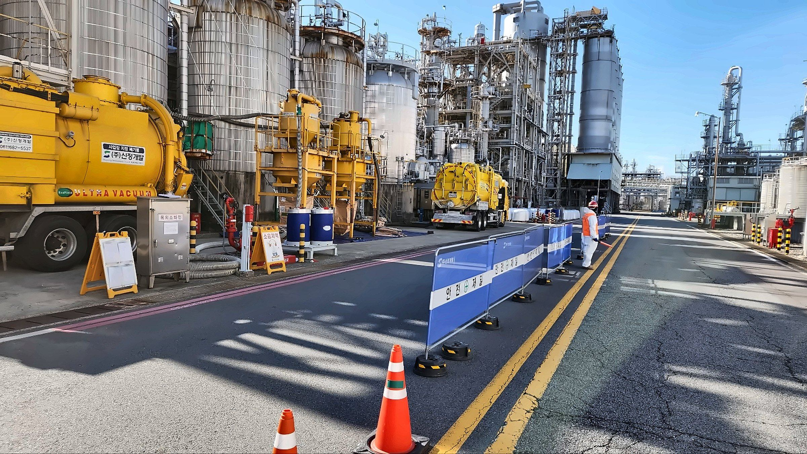

수행 이력
2020~2023년 4년간 170여 건의 작업을 수행했습니다. 이 가운데 4개 발주처와는 4년 연속 단가계약을 맺었습니다. 아래는 그중 대표 이력입니다.
170여 건2020~2023년 수행 실적 (회사소개서 2024)
4곳4년 연속 단가계약 발주처
4개 분야플랜트 · 발전 · 공공 · 건설

석유화학·정유·산업가스 플랜트 발전 설비
발전 설비 지자체·공공기관 상·하수도
지자체·공공기관 상·하수도 건설 현장
건설 현장
표시 중인 이력 12건
전체 목록은 문의 시 안내합니다.
기간수행 작업관련 업무
2020~2023
- 2020~2023 Pond Cleaning 단가계약 설비 클리닝
- 2020~2023 준설작업 단가계약 준설·슬러지
2023
- 2023.09~2023.11 폐수처리장 유량조정조 슬러지 준설 로봇 적용 준설·슬러지
- 2023.07 공정 내 배수로 슬러지 준설 준설·슬러지
- 2023.06 설비 내부 Cleaning 로봇 적용 설비 클리닝
- 2023.03~2023.06 건조제 교체 촉매·충진물
- 2023.03 흡착제 교체 촉매·충진물
- 2023.02~2023.04 반응기 로봇 촉매 Unloading 로봇 적용 촉매·충진물
2022
- 2022.05~2022.06 정기보수 APH·열교환기 튜브 Cleaning 화학세정
- 2022.05 대정비 촉매 교체 촉매·충진물
- 2022.01~2022.12 하수관거 CCTV 조사 관로·지하 조사
2020
- 2020.05~2020.11 위험물 저장탱크 개방검사 Cleaning 설비 클리닝
조건에 맞는 이력이 없습니다. 다른 분야를 선택하거나 검색어를 지워 보세요.